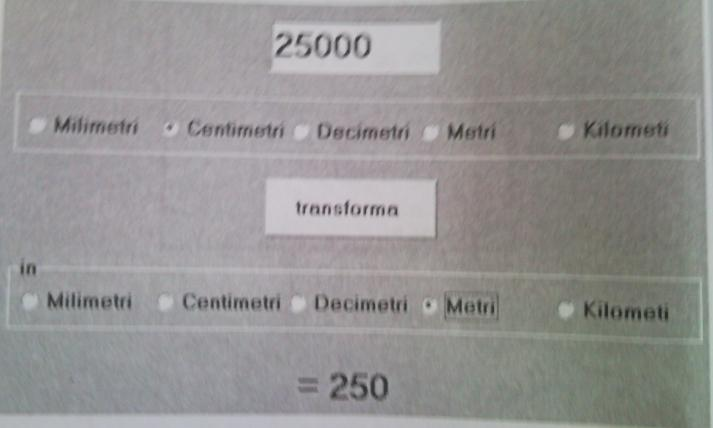

Formulare
În afara de texte, imagini, tabele, un document html poate contine butoane de comanda, casete de text, zone de editare, butoane radio, liste de selectie, casete de validare etc. De regula, aceste elemente se folosesc pentru a dinamiza documentul si/sau pentru a oferi utilizatorului posibilitatea transmiterii unor informatii (date) pentru prelucrarea lor ulterioara de catre un server WWW sau de catre un program special inserat in docu¬ment. in cazul in care informatiile ajung la server, un program le prelucreaza si/sau le stocheaza intr-o baza de date. Unele programe retumeaza un mesaj de raspuns sau lanseaza o actiune referitoare la document.
Pentru a insera intr-o pagina web astfel de elemente se creeaza formulare. Un document html poate avea unul sau mai multe formulare.
Formularul reprezinta un ansamblu de zone active (vezi lectia 1) pentru introducerea, selectarea si transmiterea datelor. El se defineste de etichetele <form> </form>. Astfel, marcajele care definesc fiecare dintre elementele enuntate se scriu intre <form> si </form >.
· Elicheta <FORM> poate avea urmatoarele atribute:
1. action = "URL" / "mailto: ADRESA";
2. method = "get" / "post";
3. name - "nume";
4. target = "numele cadrului";
5. disabled = "true" / "false".
1. Valoarea URL a atributului action este adresa programului pe serverul WWW care prelucreaza datele transmise, iar ADRESA este o adresa valida de e-mail catre care se vor expedia datele.
2. Atributul method stabileste metoda utilizata de browser pentru transmiterea datelor.
Valoarea get este implicita, semnificind ca datele din formular vor fi adaugate la adresa URL a atributului action. in acest caz browser-ul automat insereaza mai intii simbolul ?, apoi datele conform sintaxei numele cimpului = valoarea cimpului. intre fiecare doua seturi de date se insereaza simbolul &. Evident, cantitatea de date astfel transmise nu poate fi prea mare (cel mult 1KB).
În cazul valorii post datele sint transmise separat si pot fi mult mai mari.
3. Valoarea atributului name, de regula, se utilizeaza ca identificator al formularului. Un subprogram Java, JavaScript, VBScript (sau de alt tip) poate primi in calitate de parametru actual un nume de formular sau un nume al unui element al formularului.
4. Am mentionat ca in urma expedierii datelor unui formular, serverul WWW poate retuma un raspuns. Valoarea atributului target este numele cadrului in care va fi afisat acest raspuns.
5. Atributul disabled dezactiveaza (pentru valoarea true) sau activeaza toate elementele unui formular.
Majoritatea elementelor unui formular se definesc cu ajutorul marcajului <input>.
· Eticheta <INPUT> poate avea urmatoarele atribute:
1. type = "text" / "submit" / "reset" / "password" / "checkbox" / "radio" / "file" / "button";
2. name - "nume";
3. value = "valoare" / "URL";
4. disabled = "true" / "false";
5. size = "n";
6. readonly;
7. maxlength ="n";
8. checked;
9. enctype ="multipart" / "form-data".
1. Atributul type este cel mai important şi stabileşte tipul elementului.
- Valoarea "text" este implicită şi corespunde casetei de text (se mai spune cîmp de editare).
- Valoarea "submit" specifică un buton de expediere a datelor.
- "Reset" corespunde unui buton care, fiind apăsat, atribuie tuturor elementelor formu
larului valorile prestabilite.
- "Password" se foloseşte pentru crearea unei casete de text în care utilizatorul va
putea scrie texte, însă în casetă în locul oricărui simbol va apărea caracterul *.
- Valoarea "checkbox" specifică o casetă de validare (se mai spune buton de opţiunele),
utilizată pentru a activa (a valida) sau a interzice o stare, o opţiune etc.
- Valoarea "radio" specifică un buton radio, care, în cazul în care este singur,
are acelaşi rol ca şi o casetă de validare. De regulă, butoanele radio se folosesc în grup.
La selectarea unui buton din grup celelalte butoane din grup automat îşi pierd selecţia. Se consideră că
două sau mai multe butoane radio ale unui formular aparţin aceluiaşi grup dacă valorile atributelor name (ale etichetei <input>) coincid.
- "File" se utilizează pentru a crea o casetă de fişiere. Prin intermediul unei astfel de casete se
poate transmite tot conţinutul unui fişier. Numele fişierului se scrie în casetă sau se
alege cu ajutorul butonului Browse..., care însoţeşte caseta.
- Valoarea "button" corespunde unui buton de comandă. Butonul de comandă lansează
la execuţie un subprogram (scris în unul din limbajele Java, Java Script, VBScript).
2. Valoarea atributului name se foloseşte pe post de identificator al elementului corespunzător.
3. Atributul value desemnează valoarea iniţială a elementului. în cazul butonului
de comandă şi a butonului de tip "reset" valoarea acestui atribut este afişată pe
buton. Un buton radio selectat sau o casetă de validare selectată transmite date de
forma numele = nai. unde numele este valoarea atributului name, iar val - este
valoarea atributului value.
4. Atributul disabled dezactivează (pentru valoarea true) sau activează elementul unui formular.
5. Atributul size se foloseşte doar în cazul casetelor de text (adică pentru type = "text" / "password") şi
specifică lungimea casetei.
7. Valoarea atributului maxlength reprezintă numărul maxim de caractere care pot fi scrise într-o casetă de text.
8. în cazul unei casete de validare sau a unui buton radio atributul cheked (fără valori) "selectează" caseta sau butonul.
9. Atributul enctype se foloseşte doar în cazul casetelor de fişiere (adică pentru type = "file") şi specifică modul de
criptare a fişierului care urmează a fi expediat.
Un element des întîlnit în formulare este lista de selecţie. O listă de selecţie se creează cu ajutorul etichetelor
<select>, </select> şi <option>.
·
- Eticheta <SELECT> poate avea următoarele atribute:
1. name = "nume" (specifică numele listei, utilizat ca identificator al listei);
2. size = "n" (stabileşte numărul de elemente vizibile din listă, valoarea 1 este prestabilită);
3. multiple (permite selectarea simultană a cîtorva elemente din listă).
- Eticheta <OPTION> defineşte un element al listei. Ea se scrie între etichetele
<select> </select> şi poate avea atributele:
1. value = "şir de caractere" (precizează valoarea care va fi transmisă serverului în cazul în care
elementul va fi selectat; datele se expediază sub
forma name = value, unde name este numele listei,
iar value - valoarea atributului cu acelaşi nume; dacă atributul value lipseşte, atunci se va
transmite şirul de caractere care urmează după eticheta <option> );
2. selected (elementul devine selectat prestabilit).
O zonă de editare se creează cu ajutorul etichetelor <textarea>şi </textarea>
- Eticheta <TEXTAREA> poate avea următoarele atribute:
1. name = "nume" (specifică numele zonei, utilizat ca identificator al zonei);
2. cols = "n" (stabileşte numărul de caractere dintr-o linie);
3. rows = "n" (stabileşte numărul de linii afişate simultan);
4.wrap = "off" / "hard" / "soft" (stabileşte dacă textul va fi întrerupt automat
(doar în cazul valorilor hani şi soft) sau nu (pentru valoarea off) la atingerea
marginii din dreapta a zonei şi dacă în textul transmis serverului o dată cu formularul
se va include (doar în cazul valorilor off şi hard) sau nu (pentru valoarea soft) caracterul de sfîrşit de linie).
Exemplul 1
Următorul cod HTML afişează documentul html din imaginea prezentată la
începutul lecţiei.
(Evident, conţinuturile casetei, zonei de editare,
listei de selecţie, stările butonului radio şi casetei de validare au fost modificate de utilizator).
<HTML>
<body>
<form >
<input type=button value=" "> - buton de comanda<br><br>
<input size=10 >- caseta de text <br>
<input type=checkbox> - caseta de validare <br><br>
<input type=radio checked> - buton radio <br> lista de selecţie cselect name = "Nota:">
<option>l
<option>2
<option>3
</select>      
zona de editare
<textarea cols=l0 rows=4 vscrolling = "no">
</textarea>
<br><br>
caseta de fişiere <input type="file" value="D:\ex2\test.html">
</form>
</body>
</HTML>
Exemplul 2
<HTML>
<Body>
<Center>Completeaza formularul</Center>
<TABLE border="2">
<FORM action="mailto: NumeSserver.domeniu" method="POST">
<TR>
<TD>Numele: <TDxINPUT type="text" name="nume">
<TR>
<TD>Prenumele: <TD><INPUT type="text" name="prenume">
<TR>
<TD>Data naşterii (zi-luna-an) <TD><INPUT type="text" name="data_na"><TR>
<TD> Telefonul: <TD><INPUT type="text" name="telefon">
<TR>
<TD>Sexul: fcnbsp;
<INPUT type="radio" name="sex" value="M" checked> Mase knbsp;
<INPUT type="radio" name="sex" value="F"> Fem
<TD>
<INPUT type="submit" value="Transmite" align="bottom">
<INPUT type="reset" value="Sterge">
</form>
</table>
</body>
</HTML>
Întrebări de control
1. Ce reprezintă un formular?
2. Care etichete definesc un formular şi care sînt atributele lor?
3. Numiţi valorile acceptate pentru aceste atribute.
4. Ce defineşte eticheta <INPUT>?
5. Ce stabileşte atributul type al etichetei <INPUT> şi ce valori poate avea el?
6. Numiţi celelalte atribute ale etichetei <INPUT>.
7. Ce etichetă defineşte o listă de selecţie?
8. Ce atribute poate avea această etichetă?
9. Numiţi eticheta de definire a unui element al listei de selecţie şi atributele ei.
10. Ce etichetă se utilizează pentru crearea unei zone de editare?
Sarcini pentru (Lucru independent)
1. Creaţi o pagină web care va afişa un formular de introducere a datelor despre stu-dent: numele, prenumele, sexul, patru note la sesiune, anul de studiu (ales dintr-o listă de selecţie) etc.
2. Creaţi un document html care va afişa următoarea pagină web:
3. Creaţi un document html care va afişa următoarea pagină web:
4. Comentaţi următorul cod html:
<html>
<headxtitle>Probleina 4</title>
</head>
<body>
<form naroe= "fermi ">
Denumirea produsului
<input type='text" name="casetal' size=20><br> Anul expirării <input type=*text" name="caseta2' size=10><br>Luna expirării
<input type="text" name="caseta3" size=10><br> Ziua expirării
<input type="text" name="caseta4" size=10><br>
<input type="button” value="Confirma"></form>
</body>
</html>
5. Creaţi un document html care va afişa următoarea pagină web:
6. Ce va afişa pagina web cu următorul cod html?
<HTML>
<HEAD>
<TITLE>Problema</TITLE>
</head>
<BODY>
<CENTER>
<FORM>
<Table border=2>
<TR>
<TD><INPUT TYPE=button VALUE=" 1 "></TD>
<TD><INPUT TYPE=button VALUE=" 2 "></TD>
<TD><INPUT TYPE=button VALUE=" 3 "></TD>
</TR>
<TR>
<TD><INPUT TYPE=button VALUE=" 4 "></TD>
<TD><INPUT TYPE=button VALUE=" 5 "></TD>
<TD><INPUT TYPE=button VALUE=" 6 "></TD>
</TR>
<TR>
<TD><INPUT TYPE=button VALUE=" 7 "></TD>
<TD><INPUT TYPE=button VALUE=" 8 "></TD>
<TD><INPOT TYPE=button VALUE=" 9 "></TD>
</TR>
<TR>
<TD><INPUT NAME=b0 TYPE=button VALUE=" 0 "></TD>
<TD COLSPAN=2><INPUT TYPE=button VALUE=" OK ">
<TD></TR>
</TABLE>
</FORM>
</CENTER>
</BODY>
</HTML>
7. Scrieţi codul html al paginii web care va afişa următorul formular.
